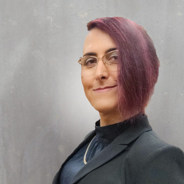

NAME: Aeva Black
TITLE: Open Source Hacker
AGE: about 40
GENDER: irrelevant
LOCATION: seattle, wa
BIOGRAPHY:
Aeva Black is a dot-com veteran, an open source hacker, and a queer and non-binary geek. They work in the Azure Office of the CTO's OSS Ecosystems team, focusing on improving open source software supply chain security, and support teams working on cloud security and digital privacy. Before joining Microsoft, they launched OpenStack's Bare Metal Cloud program while at HPE, and spent seven years building high-performance MySQL databases before that.
Aeva currently serves on the Board of the Open Source Initiative and works within several other foundations, including the Confidential Computing Consortium and the Cloud Native Computing Foundation, and previously served on the Kubernetes Code of Conduct Committee and the OpenStack Technical Committee.
Aeva is a lifelong student of the buddha dharma and an advocate for LGBTQIA+ rights. They served for several years on the Board of the Consent Academy, a Seattle-area educational non-profit, and were recently published in Transcending, an anthology of trans buddhist authors.